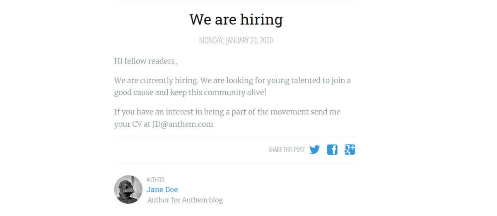
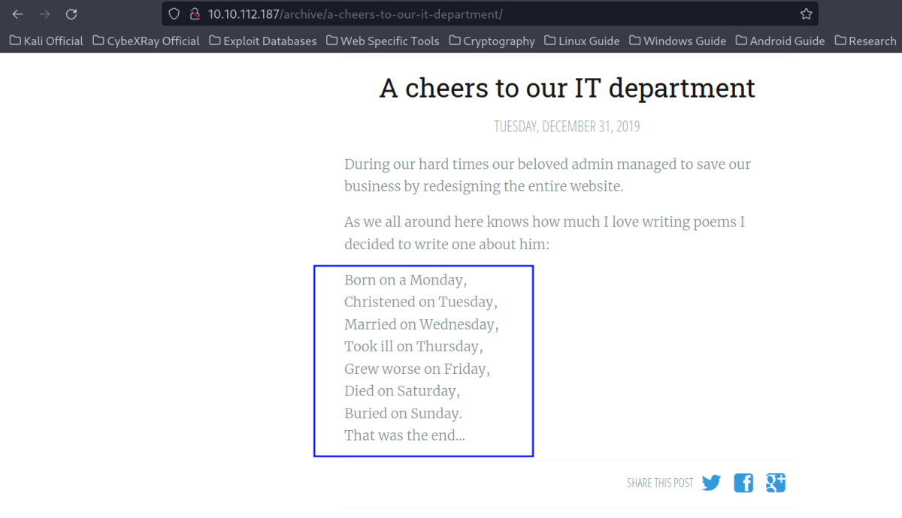
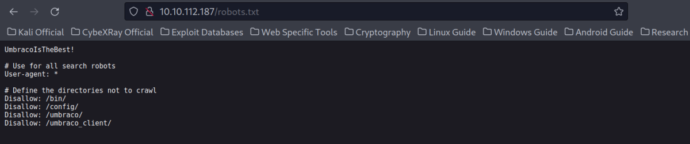
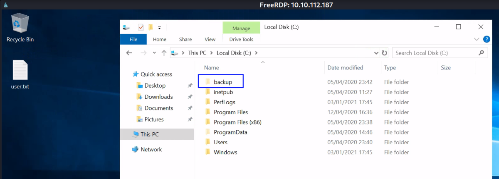
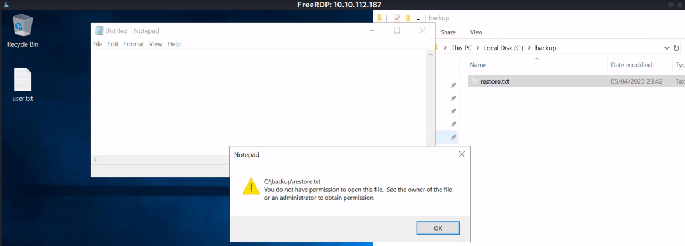
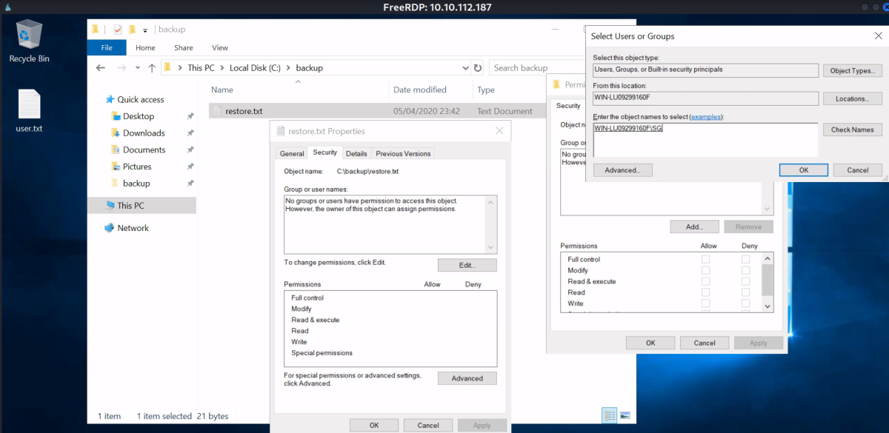
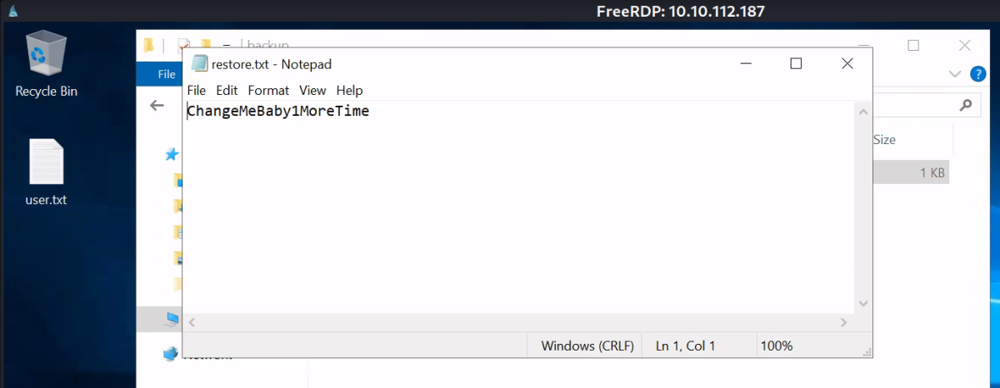

anthem
Anthem
Enumeration
Rustscan for Ports:

Nmap for Details:

Website Enumeration:

By looking at one of the posts. We get idea about email id convention.

The following post is by Jane Doe & the email ID is JD@anthem.com
Also, by doing view source: We find the First Flag in the meta content.
THM{L0L_WH0_US3S_M3T4}
The Second Flag is in the search element of view source.
THM{G!T_G00D}
The Third Flag is in the profile page of Jane Doe. We get there by either using the following link or clicking on Jane Doe in the post.
THM{L0L_WH0_D15}

By looking at one of the posts, it says its a poem about admin. I searched the poem in google & found the author name. (It could be a potential username)


Potential Username: Solomon Grundy Or SG@anthem.com
Also, by doing view source: We find the Fourth Flag in the meta content.
THM{AN0TH3R_M3TA}
We search the website for any information & found intresting info in the robots.txt

It seems umbraco application is running. Also, the first line seems like a potential password.
Potential Password: UmbracoIsTheBest!
Enumerating the Umbraco Client:
We open the link: http://10.10.112.187/umbraco

We are able to successfully Login with SG@anthem.com & UmbracoIsTheBest!

Note: From here, there are two options to solve the machine. One is however, blocked by Antivirus.
Foothold
Method-1:
I searched for the application in searchsploit.

The 2 highlighted exploits do work. (Tested after turing off the anti-virus)
However, by default the Anti-Virus is ON & it blocks any code injection reverse shells.
Method-2:
We will use the same credentials for RDP into the machine.
Username: SG
Password: UmbracoIsTheBest!
xfreerdp /dynamic-resolution +clipboard /cert:ignore /scale:140 /v:10.10.112.187 /u:SG /p:'UmbracoIsTheBest!'
We found the user flag on the desktop.
Privilege Escalation
I go to C: Drive & find a hidden folder named “backup”

Inside Backup directory, I found a restore.txt file. But i didn't have enough permissions.

I opened the Properties of the file. Went to Security tab and edited the permissions. I searched for the name SG & added all permissions to it. It was successful.


Now, we open the restore.txt again. We did find the administrator password.

Next, I RDP into the machine as administrator.
xfreerdp /dynamic-resolution +clipboard /cert:ignore /scale:140 /v:10.10.112.187 /u:administrator /p:'ChangeMeBaby1MoreTime'
We have administrator access! We collect the root flag in Administrator Desktop.
Thanks!!